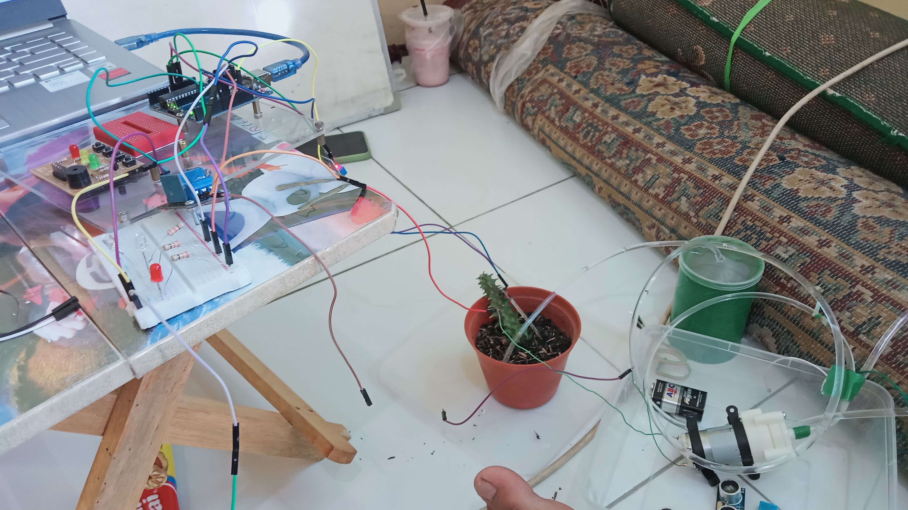
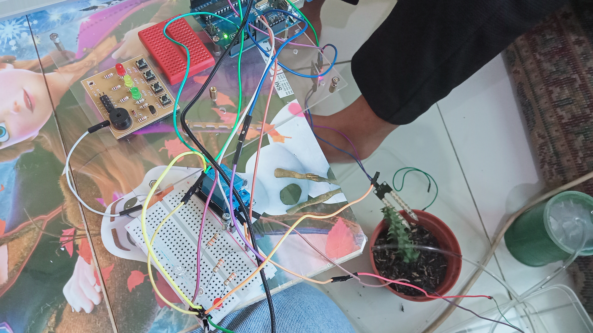
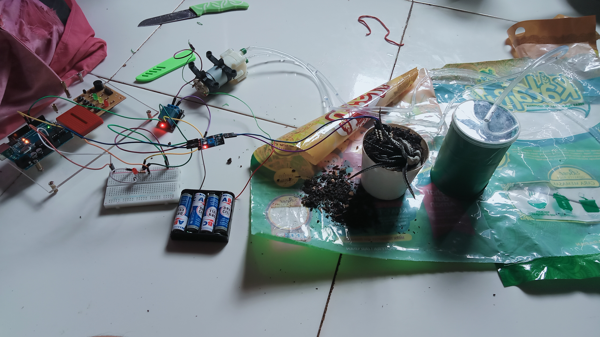
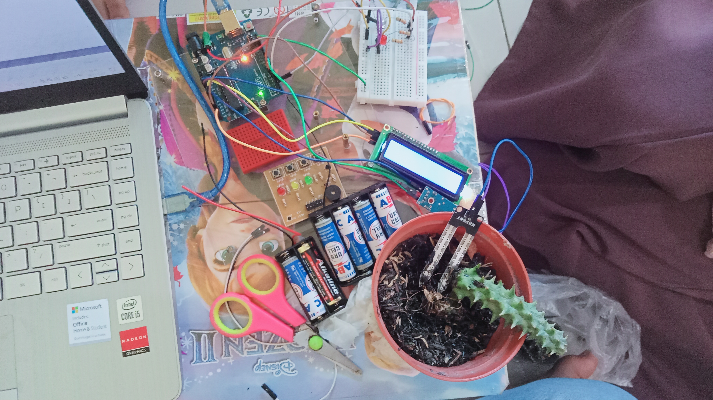
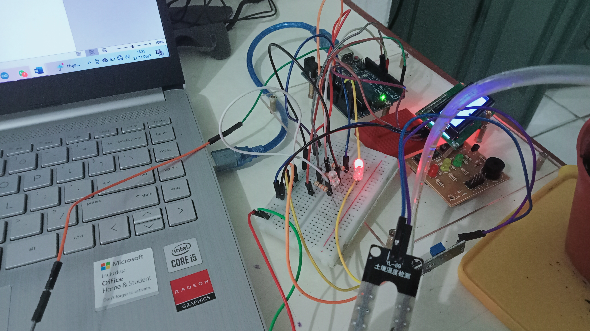
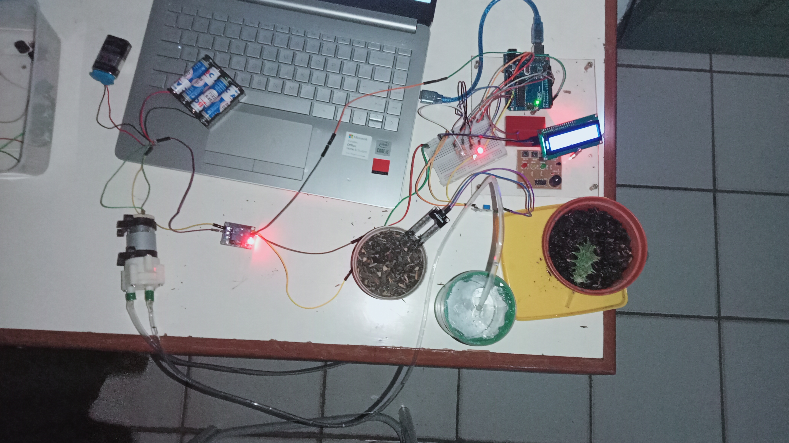
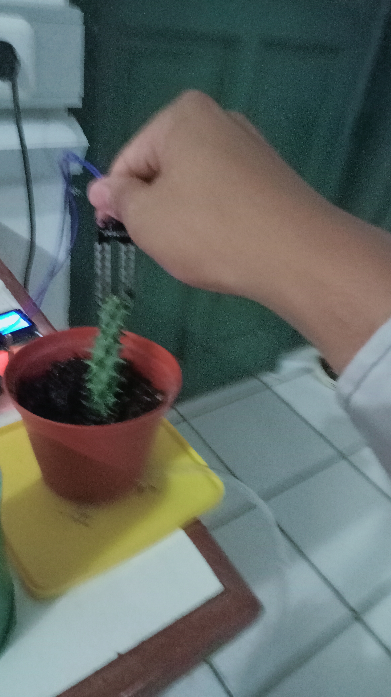
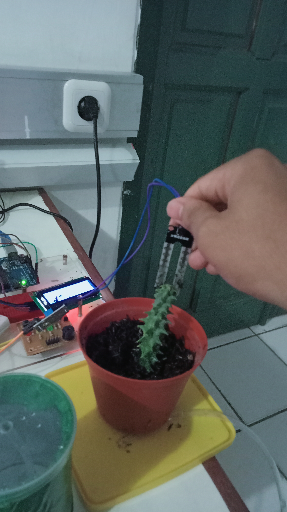
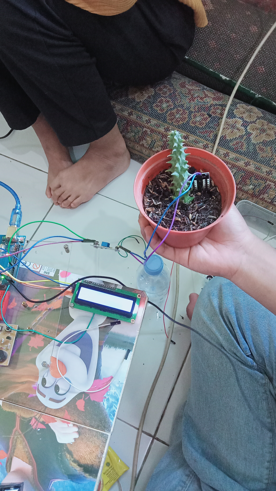

DETAIL PROYEK / 01
Sistem Irigasi Berbasis Soil Moisture
DESKRIPSI PROYEK
Sistem irigasi yang menggunakan sensor soil moisture untuk mengukur kelembapan tanah dan mendukung dalam proses penyiraman tanaman secara otomatis hanya menggunakan Internet of Things pada alat tersebut.
FITUR UTAMA
- Monitoring tingkat kelembapan tanah secara real-time.
- Memunculkan notifikasi lewat speaker atau suara terkait kondisi tanah
- Memabaca nilai sensor pada LCD Display Arduino
- Menyiramkan tanaman secara otomatis saat tanah dalam keadaan kering dan saat dalam kondisi tanah yang basah dan lembab, maka tanaman tidak di siram secara otomatis.
GAMBAR RANGKAIAN
Berikut adalah cuplikan antarmuka dashboard sistem monitoring:
Skesta Rangkaian
Gambar Rangkaian
Foto Alat
Berikut adalah Prototype alat sensor penyiraman tanaman otomatis.
Bagian dalam kotak
Bagian Luar

Dokumentasi Project
Dokumentasi proses pembuatan dan implementasi sistem:









ALAT & TEKNOLOGI
Arduino Uno
Soil Moisture Sensor
Relay Module
Internet of Things
JOB DESK / PERAN
- Pemrograman coding aruduino mikrokontroler untuk pengiriman data sensor.
- Perakitan alat seperti penyusunan kabel dan produk alat
- Pengujian integrasi sistem secara menyeluruh.
Hasil Project
- Data sensor berhasil terkirim ke serial monitor untuk melihat kondisi tanah.
- Data juga berhasil terbaca di LDC I2C Arduino untuk melihat data nilai dan kondisi tanah
- Lampu berfungsi dan menyala sesuai dengan kondisi tanah dengan melihat nilai ouputnya.
- Air terpompa dengan baik dan menghasilkan siraman tanaman secara otomatis ketika kondisi tanah kering dengan melihat notifikasi pada lampu merah yang menyala.